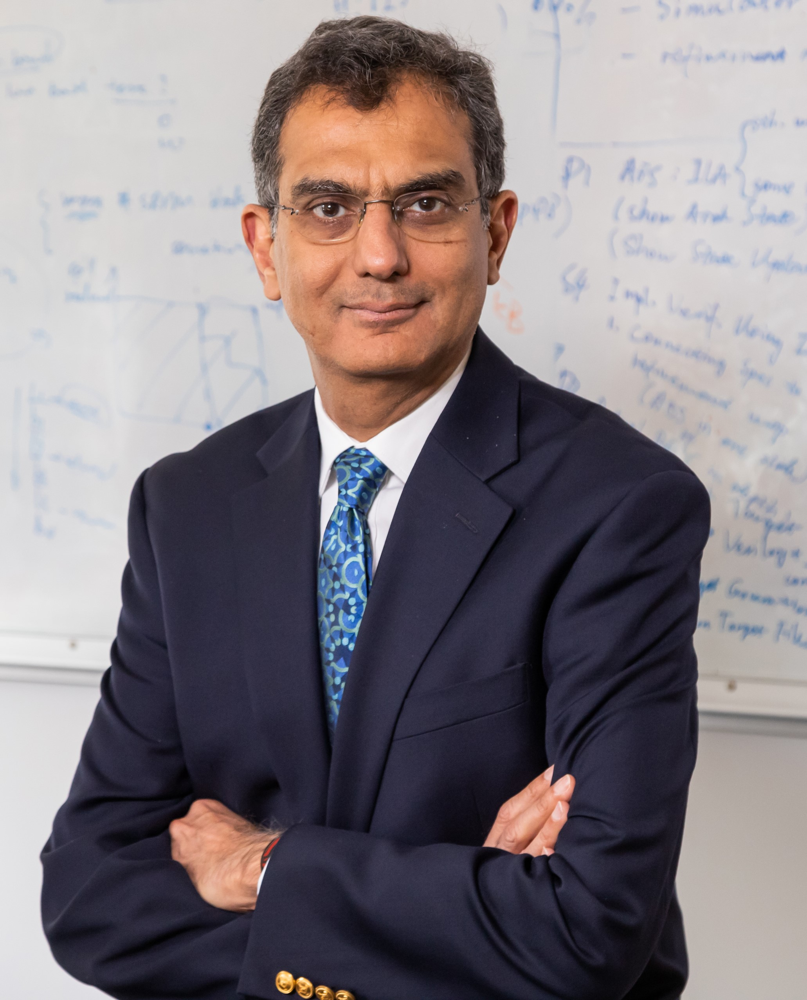

Princeton University
Talk title: Don’t Trust, and Verify
Abstract: In this talk I will address two distinct vectors at the frontier of hardware security:
I will discuss specific projects along both these vectors driven by practical concerns of low design overhead and scalability of formal verification techniques. This is joint work with the groups of Todd Austin (Michigan), Lauren Biernacki (Lafayette College), Thomas Bourgeat (EPFL) and Mengjia Yan (MIT).
 Bio: Sharad Malik is the George Van Ness Lothrop Professor of Engineering at Princeton University. He has served as the Director of the multi-university MARCO Gigascale Systems Research Center (GSRC, 2009-2012), and as the Associate Director of the Center for Future Architectures Research (C-FAR, 2013-2016). His current research focuses on design methodology for formal functional and security verification of hardware/hardware-software systems. His research in functional timing analysis and propositional satisfiability has been widely used in industrial electronic design automation tools. He has received the IEEE/ACM Design Automation Conference (DAC) Award for the most cited paper in the 50-year history of the conference (2013), the Computer-Aided Verification (CAV) Award for fundamental contributions to the development of high-performance Boolean satisfiability solvers (2009), the IEEE CEDA A. Richard Newton Technical Impact Award in Electronic Design Automation (2017), the Princeton University President’s Award for Distinguished Teaching (2009), as well as several other research and teaching awards. He has also received the UC Berkeley Electrical Engineering and Computer Science Distinguished Alumni Award (2019) and the IIT Delhi Distinguished Alumni Award (2009). He is a fellow of the IEEE and ACM.